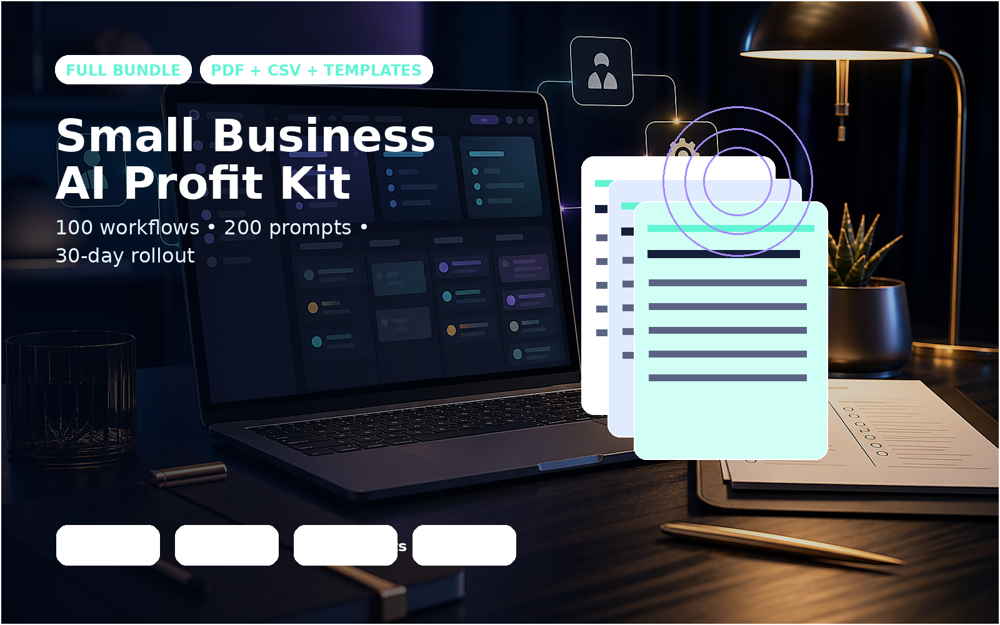

$39 practical playbook
AI workflows small businesses can actually use this week
Copy/paste prompts, worksheets, and a 30-day rollout plan for owners who want useful AI systems without hiring a developer.
Best for: small business owners who want practical AI workflows, prompts, worksheets, and a 30-day rollout plan.
Search fit: small business AI prompts, AI workflow templates for small business, AI automation ideas for small business.
Get the AI workflow kit